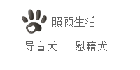
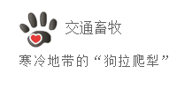
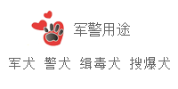
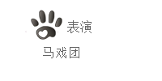

工作犬分类




“英雄犬”——工作犬
工作犬是指从事各项工作以协助人类额狗。与展览犬以外表特征等作为评选标准相比较， 工作犬重视犬种原本发展的功能性质，例如边境牧羊犬重视协助牧羊的实际能力，而非 外形。有些犬种有将展览犬和工作犬分开登记以追踪其系谱，例如澳洲凯皮犬等。除了 畜牧之外，工作犬的工作类别还有狩猎、拉车及守卫等多种。
工作犬是指从事各项工作以协助人类额狗。与展览犬以外表特征等作为评选标准相比较， 工作犬重视犬种原本发展的功能性质，例如边境牧羊犬重视协助牧羊的实际能力，而非 外形。有些犬种有将展览犬和工作犬分开登记以追踪其系谱，例如澳洲凯皮犬等。除了 畜牧之外，工作犬的工作类别还有狩猎、拉车及守卫等多种。